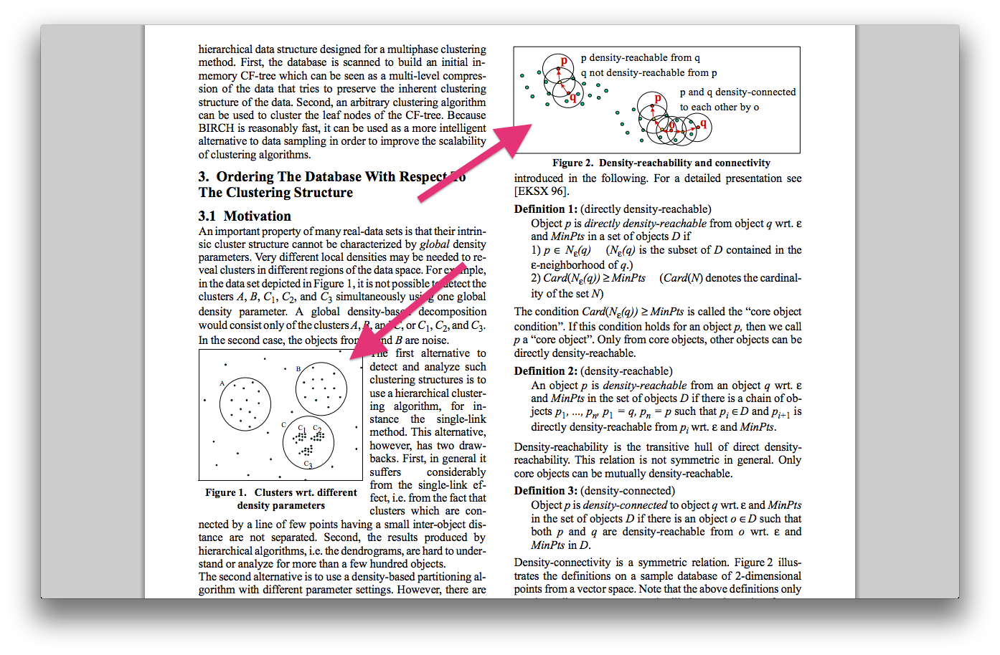

FREE THE RESEARCH PAPERS!
K-Means Clustering
Agglomerative Clustering
DBScan Clustering
Parameter tuning?
I ain't about it!
How do I turn this research paper into code I can play with?
RTFA
Read The Fucking Abstract

Look At The Pretty Pictures
Translate the Ancient Alien Heiroglyphics
$$ \subset $$
$$ \subseteq $$
$$ \nsubseteq $$
$$ \in $$
set()
$$ k_{1}, k_{2},.... k_{n} $$
$$ \Sigma $$
$$ \forall $$
for x in xrange(n): print x
[x for x in xrange(n) if x % 2 == 0]
$$ \neg $$
$$ \lor $$
$$ \land $$
not or and
It doesn't have to run properly.
You just have to be comfortable with it.
Read the paper closely.
Refine and fix the PseudoPython you wrote.
Questions?
Comments?
Rants?
Confessions?
safia.rocks — @captainsafia